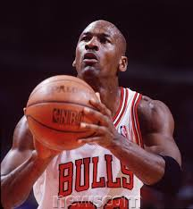

Michael Jordan
Your Biography Example
Something About Him by another guy
is an American former professional basketball player, entrepreneur, and principal owner and chairman of the Charlotte Hornets. He played 15 seasons in the National Basketball Association (NBA) for the Chicago Bulls and Washington Wizards. His biography on the NBA website states, "By acclamation, Michael Jordan is the greatest basketball player of all time." Jordan was one of the most effectively marketed athletes of his generation and was considered instrumental in popularizing the NBA around the world in the 1980s and 1990s.
After a three-season career at the University of North Carolina at Chapel Hill, where he was a member of the Tar Heels' national championship team in 1982, Jordan joined the NBA's Chicago Bulls in 1984. He quickly emerged as a league star, entertaining crowds with his prolific scoring. His leaping ability, illustrated by performing slam dunks from the free throw line in slam dunk contests, earned him the nicknames "Air Jordan" and "His Airness". He also gained a reputation for being one of the best defensive players in basketball. In 1991, he won his first NBA championship with the Bulls, and followed that achievement with titles in 1992 and 1993, securing a "three-peat". Although Jordan abruptly retired from basketball before the beginning of the 1993–94 NBA season to pursue a career in baseball, he rejoined the Bulls in 1995 and led them to three additional championships in 1996, 1997, and 1998, as well as an NBA-record 72 regular-season wins in the 1995–96 NBA season. Jordan retired for a second time in 1999, but returned for two more NBA seasons from 2001 to 2003 as a member of the Wizards.
Jordan's individual accolades and accomplishments include five Most Valuable Player (MVP) Awards, ten All-NBA First Team designations, nine All-Defensive First Team honors, fourteen NBA All-Star Game appearances, three All-Star Game MVP Awards, ten scoring titles, three steals titles, six NBA Finals MVP Awards, and the 1988 NBA Defensive Player of the Year Award. Among his numerous accomplishments, Jordan holds the NBA records for highest career regular season scoring average (30.12 points per game) and highest career playoff scoring average (33.45 points per game). In 1999, he was named the greatest North American athlete of the 20th century by ESPN, and was second to Babe Ruth on the Associated Press's list of athletes of the century. He is a two-time inductee into the Basketball Hall of Fame – in 2009 for his individual career, and in 2010 as a member of the 1992 United States men's Olympic basketball team ("The Dream Team").
Jordan is also known for his product endorsements. He fueled the success of Nike's Air Jordan sneakers, which were introduced in 1985 and remain popular today.[6] Jordan also starred in the 1996 feature film Space Jam as himself. In 2006, he became part-owner and head of basketball operations for the then-Charlotte Bobcats, buying controlling interest in 2010.